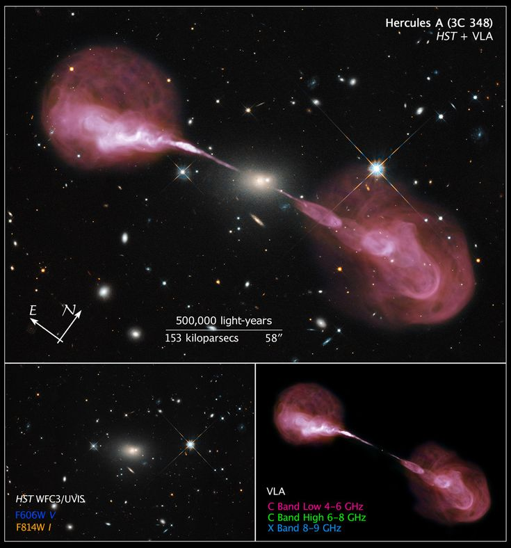

Understand things that are complicated
Quark Stars
A hypothetical intermediate state between neutron stars and black holes. The idea is that under the immense pressure at the core of a massive neutron star, neutrons themselves "dissolve" into a soup of their constituent quarks (up, down, and strange quarks), creating "strange matter." The entire star would be a giant, single hadron or a uniform quark-gluon plasma.
- Status: No confirmed observation. Some astronomers propose that objects like 3C 58 or the compact object in SN 1987A might be quark star candidates if their observed mass/radius is smaller than neutron star models allow, but they are still classified as neutron stars.
Preon Stars
An even more speculative theoretical object. The idea is that if quarks and leptons are composed of smaller, more fundamental particles called preons, then under extreme densities, a star could collapse to a preon degenerate state. They would be incredibly dense, possibly acting as dark matter candidates or seeds for supermassive black holes.
- Status: Purely hypothetical. No evidence for preons exists in particle physics.
Boson Stars
Hypothetical stars composed not of fermions (protons, neutrons, electrons) but of bosons. Bosons (like photons, gluons, or hypothetical particles such as axions) can occupy the same quantum state. A boson star would be a giant "Bose-Einstein condensate" held together by its own gravity.
- Relevance: Often discussed as a possible dark matter candidate. Unlike black holes, they would have no event horizon and could be transparent. They could potentially mimic black hole signatures in gravitational wave detections.
Gravastars (GRAVitational VAcuum STARS)
A theoretical alternative to black holes proposed within General Relativity. Instead of a singularity and event horizon, a gravastar has a superfluid core of dark energy (negative pressure) and a thin, ultra-dense shell of ordinary matter. No event horizon, potentially resolving the information paradox.
- Status: Highly speculative. No known mechanism for their formation. Distinguishing them from black holes via observation (e.g., with the Event Horizon Telescope) is an active theoretical challenge.
Hypervelocity Stars (HVS)
Stars moving at speeds exceeding the galactic escape velocity (≳ 700 km/s in the Milky Way). They are unbound and will leave the galaxy.
- Primary Origin: The Hills Mechanism—a binary star system is torn apart by the supermassive black hole (Sgr A*) at the Galactic Center. One star is captured, the other is ejected at immense speed.
- Example: S5-HVS1, a main-sequence star ejected from Sgr A* at ~1700 km/s.
Runaway Stars
High-velocity stars (tens to hundreds of km/s) still bound to the galaxy, moving much faster than local stellar populations.
- Two Origins: Dynamical Ejection (kicked out of a dense young star cluster by gravitational slingshot) and Supernova Ejection (the primary star in a binary explodes, disrupting the system and launching the secondary).
- Example: ζ Ophiuchi, a massive O-star with a prominent bow shock.
Carbon Stars (C-type; C > O)
Cool, late-type (K-M) giants/supergiants where the carbon abundance exceeds oxygen (C/O > 1) in their atmospheres. This allows carbon molecules (C₂, CN, CH, SiC₂) to form, giving them a very red color and distinct spectrum (strong Swan bands of C₂).
- Formation: Typically asymptotic giant branch (AGN) stars in the third dredge-up phase, where convection brings carbon synthesized in the He-burning shell to the surface.
- Example: R Leporis ("Hind's Crimson Star"), a famously red variable carbon star.
S-type Stars (C ≈ O)
Transition objects between M-type and Carbon stars, where carbon and oxygen abundances are nearly equal (C/O ≈ 1). Their spectra show zirconium oxide (ZrO) bands (instead of titanium oxide, TiO, in M stars) along with carbon features.
- Formation: Also AGB stars, but at an earlier stage of carbon enrichment than full carbon stars.
- Example: π¹ Gruis.
Barium Stars (Ba stars)
Cool, luminous giants (G-K) with strong spectral lines of s-process elements (barium, strontium, lanthanum). They are not massive enough to produce these elements themselves.
- The Solution: They are all members of binary systems. The s-process elements were created in the now-dead AGB companion (currently a white dwarf) and transferred to the Ba star via stellar wind or mass transfer.
- Example: ζ Capricorni.
CH Stars
A subclass of Population II, metal-poor giants that show very strong CH (methylidyne) bands and enhanced s-process elements. They are the low-metallicity, halo analogues of Ba stars.
- Origin: Also binary mass transfer from a former AGB companion, but in the ancient stellar halo.
- Example: HD 26 (a bright CH star in the galactic halo).
Magnetic Stars (Ap/Bp stars)
A subclass of main-sequence A- and B-type stars with strong, globally organized magnetic fields (hundreds of Gauss to tens of kiloGauss). "Ap" stands for "peculiar A-type."
- Key Features: Chemical Peculiarities (abnormal overabundances of silicon, strontium, chromium, europium, etc.), Stellar Spots, and Slow Rotation.
- Example: Alioth (ε Ursae Majoris), the brightest Ap star in the sky.
Megamasers
Extremely powerful, naturally occurring masers (Microwave Amplification by Stimulated Emission of Radiation). They are millions to billions of times more luminous than typical stellar masers found in our Galaxy's star-forming regions.
- Mechanism: They arise in dense molecular gas around the nuclei of active galaxies, often pumped by intense radiation from the central AGN or by shocks.
- Example: Arp 220 (OH megamaser), NGC 4258 (H₂O megamaser).
Thorne-Żytkow Object (TŻO)
A theoretical hybrid star consisting of a red supergiant (or hypergiant) star with a neutron star core, instead of a normal stellar core.
- Signature: Outer layers look like a cool, luminous red supergiant, but spectra show extreme overabundances of lithium, rubidium, molybdenum, and other heavy elements.
- Candidate Example: HV 2112 in the Small Magellanic Cloud (debated).
Be Stars
Non-supergiant B-type stars whose spectra have, or have had at some time, one or more Balmer emission lines (especially Hα). They are rapidly rotating (near critical breakup velocity), leading to the formation of a decretion disk of gas ejected from the star's equator.
- Behavior: Often variable, with disks that can form and dissipate over years to decades.
- Examples: γ Cassiopeiae (prototype), η Centauri, ζ Tauri.
Pulsars
Rapidly rotating, highly magnetized neutron stars that emit beams of electromagnetic radiation from their magnetic poles. Created in supernova explosions of massive stars.
- Examples: The Crab Pulsar (PSR B0531+21), Vela Pulsar (PSR B0833-45), PSR B1919+21 (first discovered).
Magnetars
A type of neutron star with an extremely strong magnetic field (∼10¹⁴–10¹⁵ Gauss). Emission includes bursts of X-rays and gamma-rays.
- Examples: SGR 1806-20, 1E 2259+586.
Cepheid Variables
Pulsating variable stars with a precise period–luminosity relationship. Used as standard candles for measuring galactic and extragalactic distances.
- Examples: Delta Cephei (prototype), Polaris, RS Puppis.
RR Lyrae Variables
Older, low-mass pulsating horizontal branch stars (Population II) with short periods (0.2–1 day) and nearly constant mean luminosity.
- Examples: RR Lyrae (prototype), RR Lyrae stars in M3 globular cluster.
Plerions (Pulsar Wind Nebulae)
Nebulae powered by the relativistic wind from a pulsar, emitting broadband synchrotron radiation.
- Examples: The Crab Nebula (M1), 3C 58.
Superbubbles
Large cavities (100s of pc) in ISM created by multiple supernovae and/or stellar winds from OB associations.
- Examples: The Local Bubble, N44 in the LMC, NGC 3079.
Polycyclic Aromatic Hydrocarbons (PAHs)
Organic molecules with multiple benzene rings, common in interstellar medium, detected via infrared emission features.
- Examples: The Orion Bar, NGC 7023 (reflection nebula).
Seyfert Galaxies
Spiral galaxies with bright, point-like AGN; Type 1 (broad + narrow emission lines), Type 2 (only narrow lines).
- Examples: NGC 5548 (Seyfert 1), NGC 1068 (Seyfert 2).
Radio Galaxies
Elliptical galaxies with powerful radio emission (jets/lobes from AGN). Classified as FR I or FR II.
- Examples: Centaurus A (FR I), Cygnus A (FR II).
LINER (Low-Ionization Nuclear Emission-line Region)
Weak AGN or other ionization mechanisms (shocks, post-AGB stars) with strong low-ionization lines.
- Examples: M81, M104 (Sombrero Galaxy).
Cosmic Microwave Background (CMB)
Remnant radiation from recombination epoch (z ∼ 1100), T ≈ 2.725 K. Provides snapshot of early universe.
- Key Missions: COBE, WMAP, Planck satellites.
Baryon Acoustic Oscillations (BAO)
Regular, periodic fluctuations in baryon density in early universe, used as a standard ruler (~150 Mpc) to measure cosmic expansion.
- Key Survey: Sloan Digital Sky Survey (SDSS).
Lyman-Alpha Forest & Lyman Limit
Absorption lines in quasar spectra from neutral hydrogen clouds along line of sight (Lyman-alpha forest). Lyman limit corresponds to ionization energy of hydrogen.
- Examples: Quasar 3C 273 (first identified forest), SDSS J1030+0524 (shows Gunn-Peterson trough).
Gamma-Ray Binaries
Binary system with emission dominantly in gamma-rays (GeV–TeV). Compact object accreting from a massive companion.
- Examples: LS 5039, PSR B1259-63.
Other Notable Binaries
Includes X-ray binaries, Cataclysmic Variables, and Binary Pulsars.
- Examples: Cygnus X-1 (HMXB), SS Cygni (dwarf nova), PSR B1913+16 (Hulse-Taylor binary).

radio telescope
radio galaxies